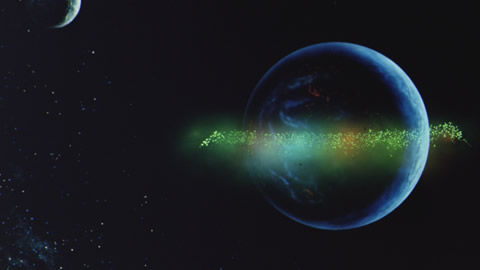

宇宙世紀年表

U.C.：Universal Century（宇宙世紀）とは『機動戦士ガンダム』およびその派生作品の舞台とる架空の紀年法。
U.C.0001 ラプラス事件
地球総人口は90億人を突破し、地球連邦政府は宇宙移民政策を開始。西暦をあらためて「宇宙世紀」を採用したが、その記念すべき元年元日に首相官邸ラプラスが宇宙ステーションごとテロ活動で爆破される。
U.C.0068 ジオン・ズム・ダイクン急死
地球連邦国家からの独立運動の象徴たるダイクンが、議会での対連邦重要演説中に急死してしまう。
U.C.0079 一年戦争勃発
ジオン公国が地球連邦からの独立をするための戦争。年初から年末にわたる戦いだったため、この呼び名がある。別名「ジオン独立戦争」と呼ばれる。U.C.0080、月面都市グラナダで、地球連邦政府とジオン共和国臨時政府との間に終戦協定が締結されて一年戦争が終結。
作品：機動戦士ガンダム、機動戦士ガンダム サンダーボルト、ガンダム THE ORIGIN、機動戦士ガンダム ククルス・ドアンの島、MSイグルー、機動戦士ガンダム 第08MS小隊、機動戦士ガンダム0080 ポケットの中の戦争